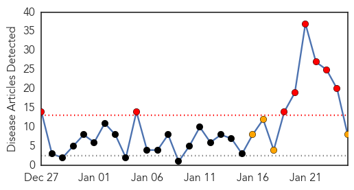
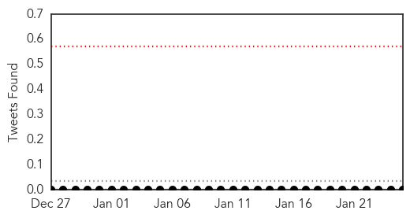
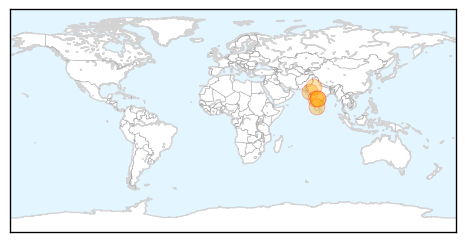
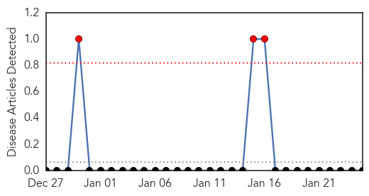

Swine Flu
30-Day Web Trend
8 alerts, 4 warnings

30-Day Twitter Trend
0 alerts, 0 warnings

Article Locations
Article Confidences

Top Articles:
- 1.000
- Read Health News & Articles at TheHealthSite.com
- 1.000
- Swine flu deaths push toll to 21, health department on high alert
- 0.999
- 49-year-old man tests positive for swine flu
- 0.997
- Ready to Take on Swine Flu, Govt Launches 24x7 Helpline
- 0.996
- 12 More Test Positive for Swine Flu, City on High Alert
- 0.990
- Swine flu vaccine makers wary about ramping up production
- 0.987
- Telangana remains on high alert for swine flu
- 0.910
- 35 fresh swine flu cases in Telangana
Top Tweets:
-
No tweets found for Jan 25, 2015
Yellow Fever
30-Day Web Trend
3 alerts, 0 warnings

30-Day Twitter Trend
0 alerts, 0 warnings

Article Locations

Article Confidences

Top Articles:
-
No articles found for Jan 25, 2015
Top Tweets:
-
No tweets found for Jan 25, 2015